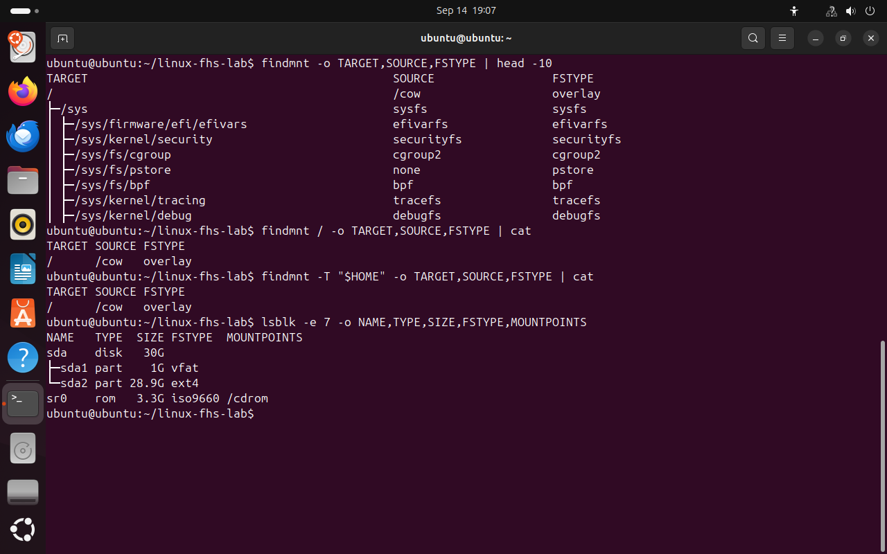
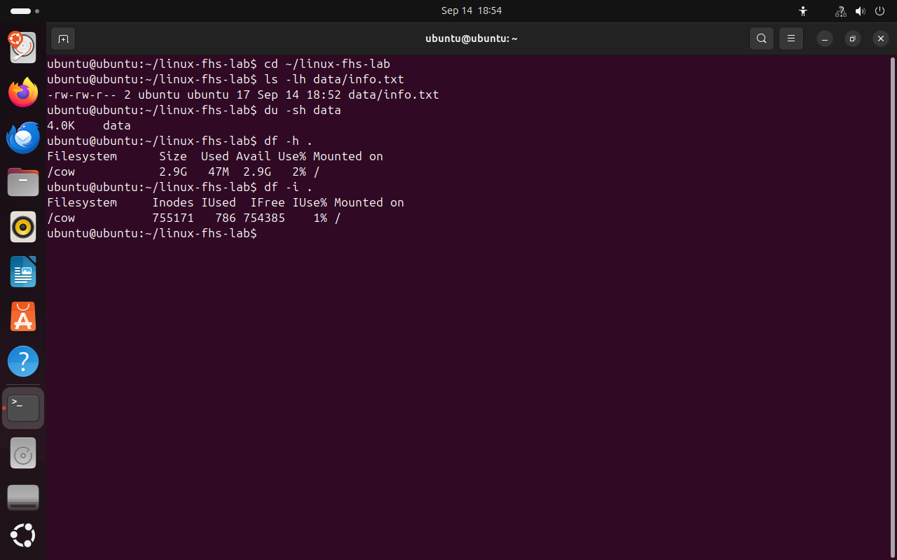
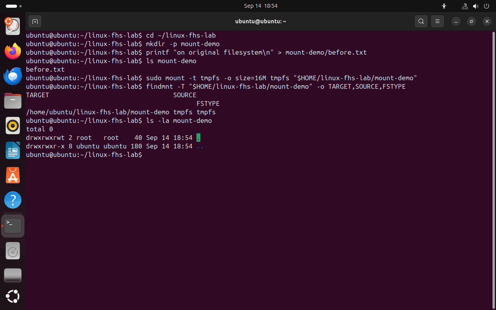
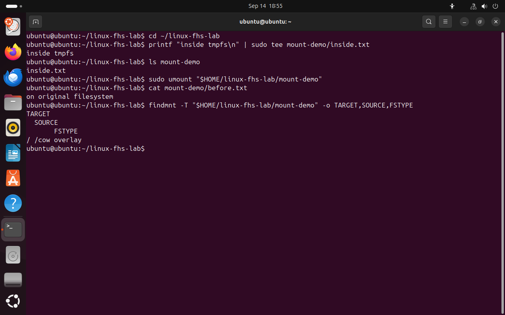

Часть 7 из 8
Файловые системы и монтирование
В этой части рассмотрим, как файловые системы разных устройств объединяются в одно дерево каталогов, как определить файловую систему для конкретного пути и как измерить занятое и свободное место.
7.1 Файловая система и монтирование
Файловая система определяет способ хранения файлов: как записываются имена, сведения о файлах и данные. На дисках в Linux обычно используется ext4, в оперативной памяти — tmpfs, а proc и sysfs, как мы видели в части 5, данные вообще не хранят.
Чтобы файловая система стала доступна, её монтируют — подключают к каталогу общего дерева. Такой каталог называется точкой монтирования. Корневая файловая система подключена к /, proc — к /proc, флешка может быть подключена к /media/ubuntu/имя. Для программ путь выглядит одинаково, на каком бы устройстве ни находился файл.
Сведения о подключённых файловых системах выводит команда findmnt. Столбец TARGET — точка монтирования, SOURCE — источник (раздел диска, память, ядро), FSTYPE — тип файловой системы. С ключом -T команда показывает, какая файловая система содержит указанный путь. Список дисков и разделов выводит lsblk.
findmnt -o TARGET,SOURCE,FSTYPE | head -10# первые строки спискаfindmnt / -o TARGET,SOURCE,FSTYPE | cat# корневая файловая системаfindmnt -T "$HOME" -o TARGET,SOURCE,FSTYPE | cat# файловая система домашнего каталогаlsblk -e 7 -o NAME,TYPE,SIZE,FSTYPE,MOUNTPOINTS# диски и разделы
- 1точка монтирования — корень
- 2источник — память Live-сессии
- 3тип файловой системы Live-сессии
- 4раздел диска с ext4, в Live-сессии не подключён
{kind=link}

Весь снимок ↗Домашний каталог находится на корневой файловой системе.
7.2 Занятое и свободное место
Для измерения места используют три команды, и каждая отвечает на свой вопрос. ls -lh показывает размер содержимого отдельного файла. du -sh подсчитывает, сколько места на диске занимают файлы в каталоге. df -h показывает общий объём и свободное место на файловой системе. Команда df -i выводит число занятых и свободных inode: если они закончатся, новые файлы создать не получится даже при наличии свободного места.
cd ~/linux-fhs-labls -lh data/info.txt# размер файлаdu -sh data# место, занятое каталогомdf -h .# место на файловой системеdf -i .# использование inode
- 1размер содержимого — 17 байт
- 2занято на диске — 4 КБ
- 3свободное место
- 4занято inode
{kind=link}

Весь снимок ↗Размер файла, занятое каталогом место и свободное место файловой системы.
7.3 Подключение файловой системы к каталогу
Подключим к каталогу mount-demo файловую систему tmpfs размером 16 МБ. До подключения в каталоге создадим файл before.txt. После монтирования в каталоге будет видно содержимое tmpfs, а before.txt станет недоступен, хотя и не будет удалён. Монтирование требует прав администратора, поэтому команда выполняется через sudo.
- ls mount-demo
- before.txt
- findmnt
- / /cow overlay
cd ~/linux-fhs-labmkdir -p mount-demoprintf "on original filesystem\n" > mount-demo/before.txtls mount-demo# содержимое до подключенияsudo mount -t tmpfs -o size=16M tmpfs "$HOME/linux-fhs-lab/mount-demo"# подключить tmpfsfindmnt -T "$HOME/linux-fhs-lab/mount-demo" -o TARGET,SOURCE,FSTYPEls -la mount-demo# содержимое после подключения
- 1файл до подключения
- 2подключена tmpfs
- 3каталог пуст
{kind=link}

Весь снимок ↗До монтирования в каталоге был before.txt, после — пустая tmpfs.
Запишем в tmpfs файл inside.txt и отключим её командой umount. После отключения в каталоге снова виден before.txt, а inside.txt исчезает вместе с tmpfs. Для записи используется sudo tee, так как у обычного пользователя нет прав на запись в подключённую tmpfs.
cd ~/linux-fhs-labprintf "inside tmpfs\n" | sudo tee mount-demo/inside.txt# записать файл в tmpfsls mount-demosudo umount "$HOME/linux-fhs-lab/mount-demo"# отключить tmpfscat mount-demo/before.txtfindmnt -T "$HOME/linux-fhs-lab/mount-demo" -o TARGET,SOURCE,FSTYPE
- 1файл в tmpfs
- 2исходный файл
- 3каталог снова на корневой файловой системе
{kind=link}

Весь снимок ↗После отключения tmpfs исходный файл снова виден.
Итоги части 7
- Файловая система определяет способ хранения файлов; основные типы — ext4, tmpfs, proc, sysfs.
- Монтирование подключает файловую систему к каталогу — точке монтирования.
findmntпоказывает подключённые файловые системы,lsblk— диски и разделы.ls -lh— размер файла,du -sh— место каталога,df -h— место файловой системы.
В отчётСнимок findmnt для корня и два снимка опыта с tmpfs.